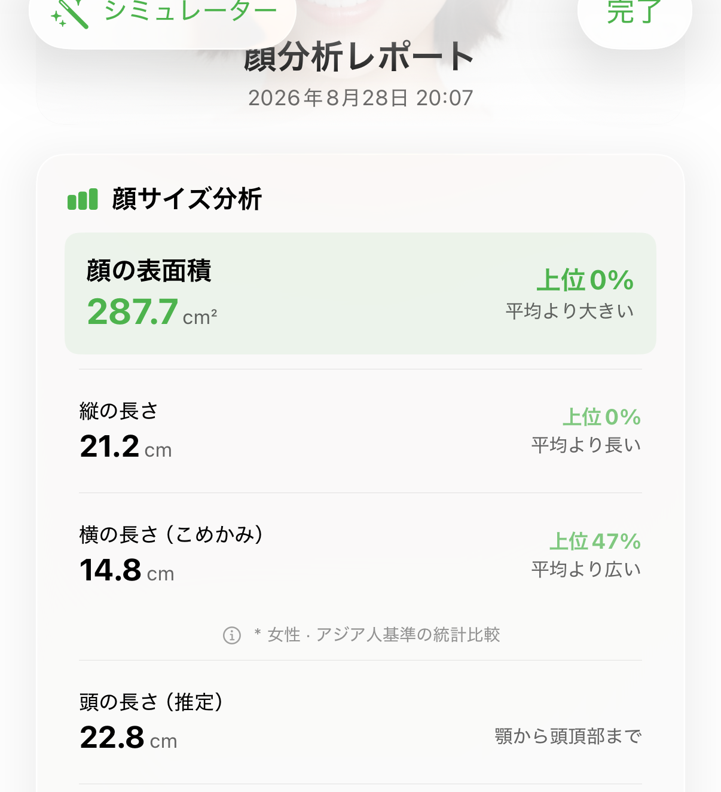
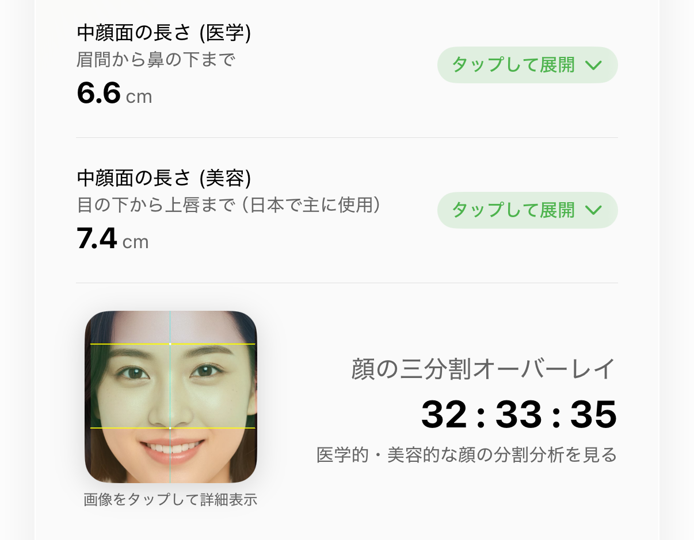
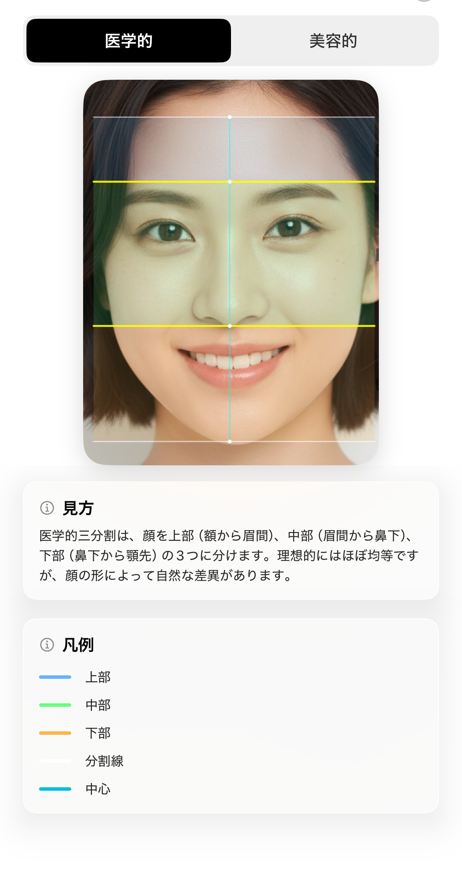
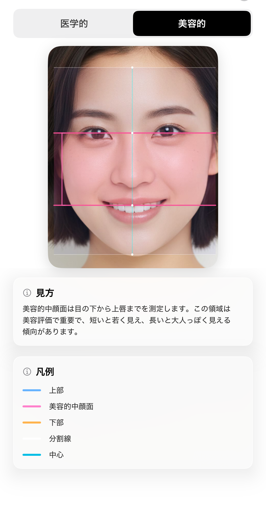
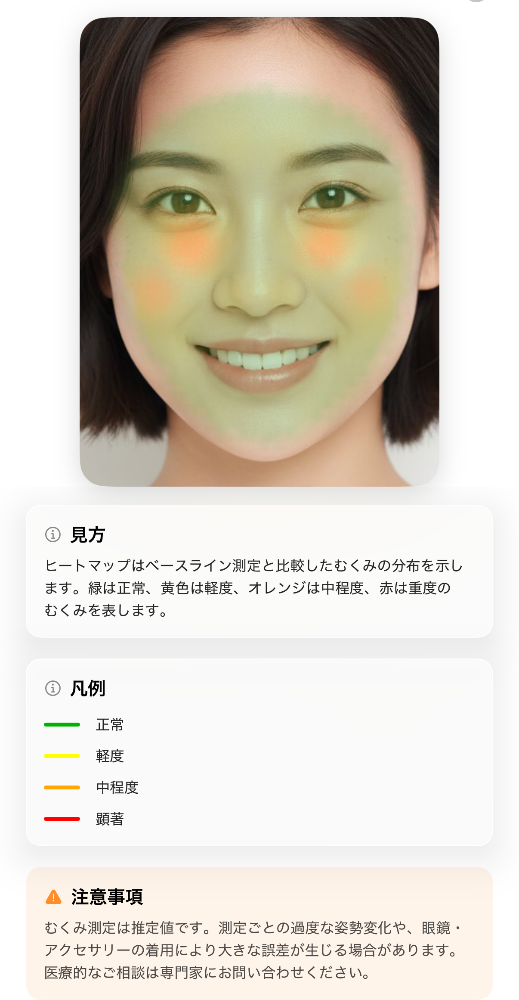
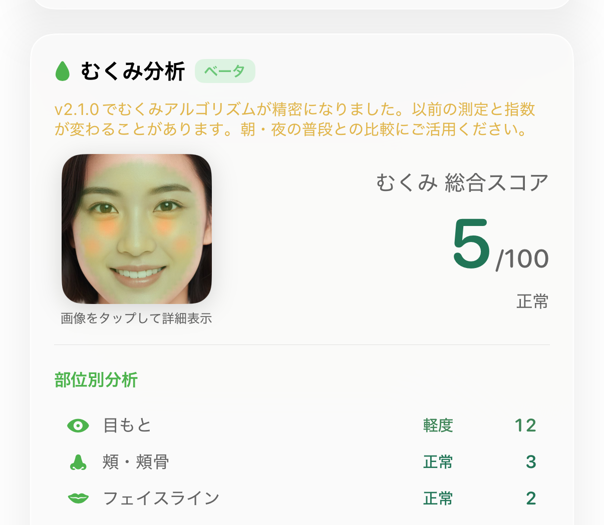
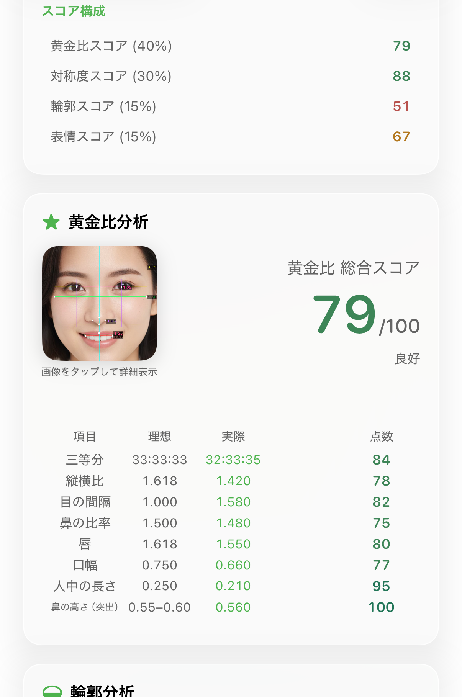
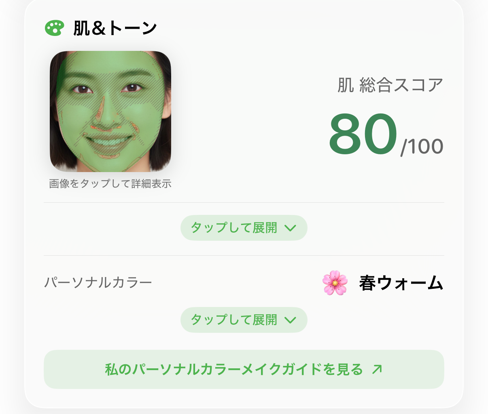

体験にご参加いただきありがとうございます。この資料はどんな機能があって、 それぞれ何が見どころかをまとめた参考用です。決まった構成や順番はありません。 ご自身のスタイルで自由に作ってください。
そのまま使っても、アレンジしても大丈夫です。
ほかのアプリは、平面の写真1枚をAIサーバーに送って結果を受け取るだけです。 人が目で見てもできる判断です。
Renkaは顔の3D測定を使います。 写真を送るのではなく、顔の立体形状を直接測ります。 だから面積・長さ・角度という写真では出ない数値が出て、測定は端末の中で完結します。
「このアプリ、何が違うの？」を扱うなら、ここがポイントです。
順番に意味はありません。気になるものだけどうぞ。

「顔が大きい/小さい」は普通、顎先から頭頂まで測ったもの —— それだと髪の厚みも入ってしまいます。 Renkaは私たちが勝手に引いた線ではなく、Appleのエンジニアが考案した顔メッシュの基準 —— 顔だけを覆って終わるその境界 —— までを測ります。だから髪型が変わっても数値は変わらず、 誰にとっても同じ基準です。
頭の長さ の横には「推定」と付いています —— 実測ではなく推算値です。
同じ顔に基準が2つあります。医学的（眉間→鼻下）6.6cm、美容的（目の下→上唇）7.4cm。 アプリ内で切り替えて自分の顔に重ねられます —— アプリの画面にも美容的基準に 「日本で主に使用」と表示されています。 日本で通用しているあの基準です。






一画面に情報が多いので、結果画面を映すときに使いやすいです。

食べ物を撮るとカロリーと栄養情報が出ます。課金なしで使えて、食品認識は端末内で動きます。
測定結果をもとにAIと会話できます。測って出た数字を踏まえて答えてくれるのが特徴です。 カロリーカメラでもRenaの補助認識が1日3回まで無料です。
体験コードではProの全機能が開いています。一般ユーザーはこうです：
コメントで「この画面が出ない」と聞かれたら、「詳細レポートはPro機能です」と 答えていただければ大丈夫です。
測定は端末の中で完結します。 写真をサーバーにアップロードしません。
iPhoneとAndroid、両方あります。
スコアについて：アプリのところどころに XX/100 が表示されます。
「スコアはあまり意味がない」という切り口で行っても大丈夫です —— 私たちもそう言っています。
ひとつだけお願い：美容施術の効果や術前術後の比較に見えないようにしてください。 「この部位がこうだと、こう見える」までにして、「どう直すか」には行かないでほしいです。
付ける・付けないはご自由に。よく使われているものを挙げておきます （流行りは変わるので、あくまで参考程度に）。
もし差し支えなければ、#Renka3D をひとつ入れてください。
私たちが動画を見つけやすくなり、公式アカウントでの紹介や応援もしやすくなります。
（#Renka だけだと他の投稿に埋もれてしまうので、3D付きでお願いしています。）